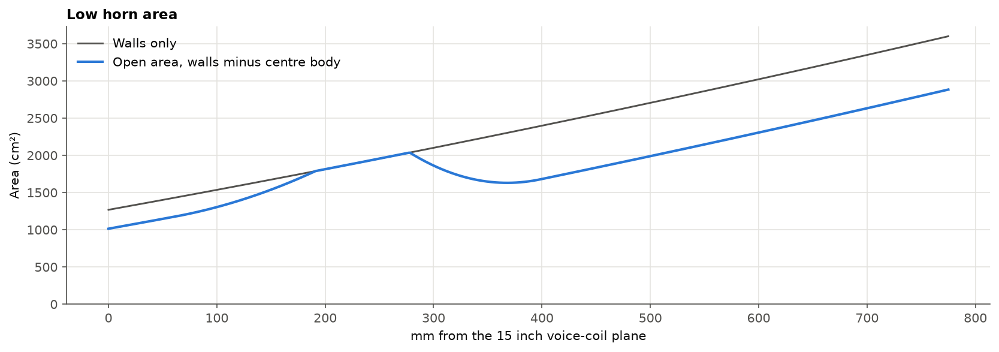
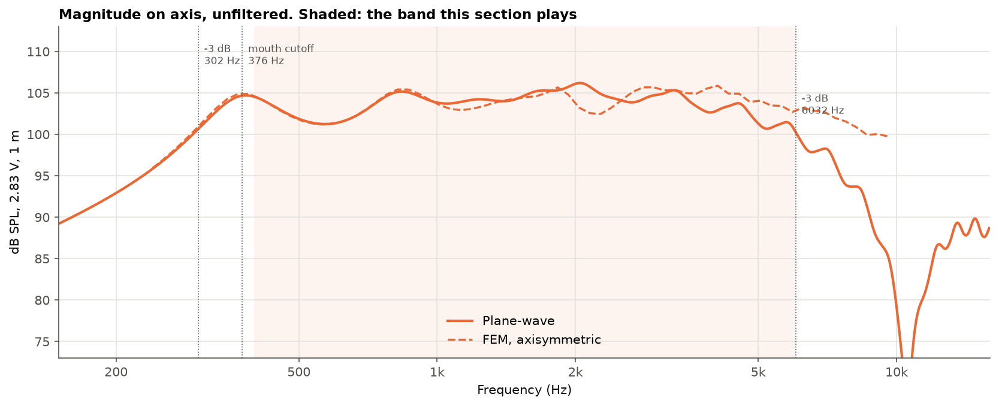
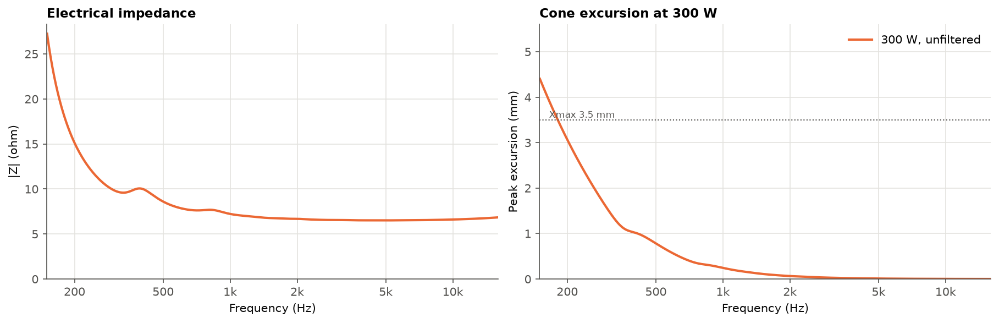
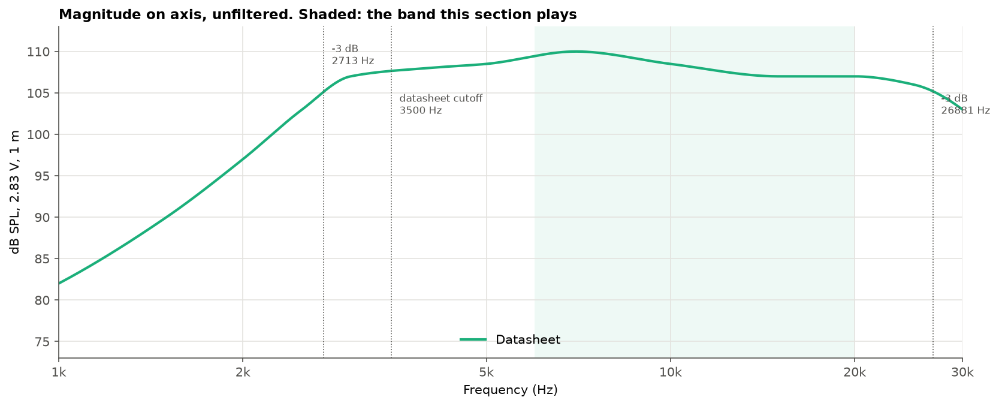

Simulation
Each horn on its own first, with all its plots, then the full-range system with the cutoff frequencies marked. All curves are at 2.83 V and 1 m.
Low horn · Mid horn · Tweeter · Full range · Method · Limits
Low horn
18Sound 15W500 in the flat-panel low horn: 360 mm octagon to 600 mm square over 850 mm, 35 litre sealed chamber. From 100 Hz to 400 Hz: 2.4 dB variation at 105.5 dB mean. Lower -3 dB at 70 Hz; the mouth's own cutoff, where its circumference equals the wavelength, is 161 Hz. The air between the cone and the throat gives a high-frequency corner near 659 Hz. FEM agrees within 0.7 dB in band.




Mid horn
PRV 6MR600X-NDY in an exponential horn: 124 mm annular throat around the 86 mm tweeter sleeve, 290 mm mouth, 260 mm long. From 400 Hz to 6000 Hz: 5.7 dB variation at 103.7 dB mean. Lower -3 dB at 302 Hz, upper -3 dB at 6032 Hz, mouth cutoff 376 Hz. FEM agrees within 3.2 dB in band, mean difference +0.21 dB.






Tweeter
Fostex T925A, not simulated: the curves are its published on-axis and off-axis response, read from the datasheet graph to about 2 dB, with minimum phase reconstructed from the magnitude. Its own horn cuts off at 3500 Hz. From 6000 Hz to 16 kHz: 3.0 dB variation at 108.6 dB. The tweeter's diaphragm sits 155 mm behind the mouth plane, which the system sum includes as a delay. The mid horn's effect on the tweeter's coverage is not modelled.




Full range

| Section | Lower -3 dB | Upper -3 dB | Other limit |
|---|---|---|---|
| Low | 70 Hz | 583 Hz | Mouth cutoff 161 Hz |
| Mid | 302 Hz | 6032 Hz | Mouth cutoff 376 Hz |
| Tweeter | 2713 Hz | 26881 Hz | Horn cutoff 3500 Hz (datasheet) |
| Crossovers | 400 Hz | 6000 Hz | LR4 |
Through the crossover the on-axis sum stays within 4.9 dB peak to peak from 100 Hz to 16 kHz (RMS deviation 1.02 dB), before any equalisation.

DSP settings
| Channel | Filter | Gain | Delay | Polarity in the model |
|---|---|---|---|---|
| Low | LR4 low-pass 400 Hz | -1.3 dB | 0.00 ms | Normal |
| Mid | LR4 high-pass 400 Hz, LR4 low-pass 6000 Hz | +0.0 dB | 2.04 ms | Normal |
| Tweeter | LR4 high-pass 6000 Hz | -3.4 dB | 2.32 ms | Inverted |
In the model, positive voltage pushes air out of every horn. The reversed 15 inch does the opposite when wired red to positive: it pulls air out of the horn. So where the table says the low section is inverted, wire it normally and leave the DSP channel at normal polarity; where it says normal, invert it. Confirm with a measurement at the crossover.
Method
- Plane-wave horn model. Each horn is cut into a few hundred thin annular slices and cascaded as transfer matrices, with a flanged-piston radiation load at the mouth. Centre bodies are subtracted slice by slice.
- Driver model. Thiele/Small motor with its sealed rear volume and the front chamber between cone and throat.
- Radiation. The far field includes the curved wavefront at a flared mouth, which matters off axis.
- FEM check. Mid and low horns solved again with an axisymmetric Helmholtz finite-element model (dolfinx 0.8) in a baffled half-space, coupled to the same driver models. The FEM code matches the exact straight-tube solution to a median 3% in throat impedance.

What the models leave out
- No cross modes in the plane-wave model. The FEM is axisymmetric: it replaces the octagon and square of the low horn with circles of equal area.
- Cone breakup, wall losses, distortion and power compression. Cone sizes are only trusted to a crossover of 7 kHz for 6 inch, 5 kHz for 8 inch and 3.6 kHz for 10 inch.
- The cabinet front is an infinite baffle at the mouth plane. A real front face shows baffle step and edge diffraction in the low and mid bands.
- The tweeter is its datasheet response. How the mid horn around it changes its coverage is not modelled.
- Support rods, vanes and cable channels block about 2% of each passage and are not in the acoustic models.
- Motor and cone dimensions of the drivers not on a datasheet drawing are estimates; measure before printing.